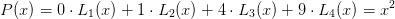
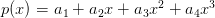
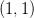
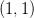
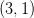
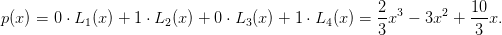
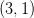
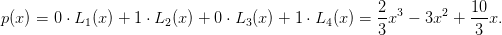

6.4 Aproximação de funções reais por polinômios interpoladores
Teorema 6.4.1. Dados  pontos distintos, , dentro
de um intervalo ![[a,b]](main2850x.png) e uma função  com
e uma função  com  derivadas contínuas
nesse intervalo (), então para cada  em
derivadas contínuas
nesse intervalo (), então para cada  em ![[a,b]](main2855x.png) , existe um
número
, existe um
número  em
em  tal que
tal que

 é o polinômio interpolador. Em especial, pode-se dizer que
é o polinômio interpolador. Em especial, pode-se dizer que

![M = max |f(n+1)(ξ(x))|
x∈[a,b]](main2861x.png)
Exemplo 6.4.1. Considere a função  e o polinômio
e o polinômio  de grau 2 tal que
de grau 2 tal que  ,
,  e
e  . Use
a fórmula de Lagrange para encontrar
. Use
a fórmula de Lagrange para encontrar  . Encontre o erro máximo que
se assume ao aproximar o valor de
. Encontre o erro máximo que
se assume ao aproximar o valor de  pelo de
pelo de  no intervalo
no intervalo ![[0,1]](main2870x.png) .
Trace os gráficos de
.
Trace os gráficos de  e
e  no intervalo
no intervalo ![[0,1]](main2873x.png) no mesmo plano
cartesiano e, depois, trace o gráfico da diferença
no mesmo plano
cartesiano e, depois, trace o gráfico da diferença  . Encontre
o erro efetivo máximo
. Encontre
o erro efetivo máximo  .
.

L2=poly([0 1],’x’);L2=L2/horner(L2,0.5)
L3=poly([0 .5],’x’);L3=L3/horner(L3,1)
P=L1+cos(.5)*L2+cos(1)*L3
x=[0:.05:1]
plot(x,cos)
plot(x,horner(P,x),’red’)
plot(x,horner(P,x)-cos(x))
Para encontrar o erro máximo, precisamos estimar  e
e
![|| ( 1 ) ||
max ||x x − -- (x − 1 )||
x∈[0,1] 2](main2878x.png)
 tem um mínimo (negativo) em
tem um mínimo (negativo) em
 e um máximo (positivo) em
e um máximo (positivo) em  . Logo:
. Logo:
![| ( ) |
|| 1- ||
mxa∈x[0,1]|x x − 2 (x − 1)| ≤ max {|Q (x1)|, |Q (x2)|} ≈ 0,0481125.](main2882x.png)

Para encontrar o erro efetivo máximo, basta encontrar o máximo de
 . O mínimo (negativo) de
. O mínimo (negativo) de  acontece em
acontece em
 e o máximo (positivo) acontece em
e o máximo (positivo) acontece em  . Portanto,
o erro máximo efetivo é
. Portanto,
o erro máximo efetivo é  .
.
Exemplo 6.4.2. Considere o problema de aproximar o valor da integral
 pelo valor da integral do polinômio
pelo valor da integral do polinômio  que coincide com
que coincide com
 nos pontos
nos pontos  ,
,  e
e  . Use a fórmula de Lagrange
para encontrar
. Use a fórmula de Lagrange
para encontrar  . Obtenha o valor de
. Obtenha o valor de  e encontre uma
expressão para o erro de truncamento.
e encontre uma
expressão para o erro de truncamento.
O polinômio interpolador de  é
é

 é:
é: ![∫ 1 [ ( 2 3 )]1 [ (1 )( 4 ) ]1
P (x )dx = f(0) -x3 − --x2 + x + f -- − -x3 + 2x2
0 [ ( 3 2 )] 0 2 3 0
2-3 1- 2 1
+ f(1) 3x − 2 x 0
( 2 3 ) ( 1) ( 4 ) ( 2 1 )
= f(0) --− --+ 1 + f -- − --+ 2 + f(1) --− --
3 2( ) 2 3 3 2
1- 2- 1- 1-
= 6f(0) + 3 f 2 + 6f(1)](main2900x.png)
![| | | |
||∫ 1 ∫ 1 || ||∫ 1 ||
| 0 f(x )dx − 0 P (x )dx| = | 0 f(x ) − P (x)dx|
∫ 1
≤ |f(x ) − P (x)|dx
0 ∫ | ( ) |
M-- 1 || 1- ||
≤ 6 0 |x x − 2 (x − 1)|dx
M [ ∫ 1∕2 ( 1)
= --- x x − -- (x − 1)dx
6 0 2
∫ 1 ( 1) ]
− x x − -- (x − 1)dx
1∕2[ ( 2 )]
M-- 1-- -1- -M--
= 6 64 − − 64 = 192 .](main2901x.png)
![′′′
M = maxx ∈[0,1]|f (x)|](main2902x.png) .
.
Observação 6.4.1. Existem estimativas melhores para o erro de truncamento para este esquema de integração numérica. Veremos com mais detalhes tais esquemas na teoria de integração numérica.
Exemplo 6.4.3. Use o resultado do exemplo anterior para aproximar o valor
das seguintes integrais:
a) 
b) 
Solução. Usando a fórmula obtida, temos que


Exercícios
E 6.4.1. Use as mesmas técnicas usadas o resultado do Exemplo 6.4.2 para obter uma aproximação do valor de:
 |
através do polinômio interpolador que coincide com  nos pontos
nos pontos  e
e
 .
.
Resposta.  ,
, ![-1max |f′′(x)|
12 x∈[0,1]](main2913x.png)
* As versões do livro disponíveis no site podem estar desatualizadas, veja a versão PDF atual no repositório GitHub oficial do projeto.
- IME - UFRGS